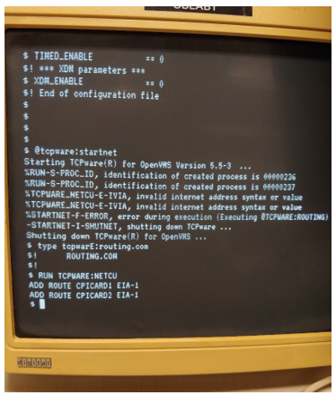

Converting a DS15 MCS System to FSC
Purpose
- As MCS system replacement rolls on, a surplus of OpenVMS capable hardware has been created. This hardware can be used to operate FSC systems, as the FSC has no replacement (until a plant has completely replaced Space timing systems with offerings from Bucher-Emhart Glass). This procedure outlines how to repurpose one of those hardware platforms, the AlphaServer DS15, to host the FSC system. The procedure may leave out details of certain steps that could vary from system to system, and is meant to be followed by someone with existing VMS system management and hardware experience.
- For COM-SOC 1 communication, it is important to retain the Digi Edgeboard device. Note that this device may not be plugged or unplugged while it or the server have power connected. Doing so will damage it, and they are no longer available new. Since the MCS used the 8-port version of the Edgeboard, the converted server will be limited to 7 COM-SOC I machines plus the Optomux unit or 8 machines without Optomux.
- This procedure preserves the existing OpenVMS operating system installation and licensing information.
Application
This work instruction applies to all Space Plants that has FSC and Space IS Machines
Procedure
- With the system powered off, connect a spare disk to the MCS system.
This new disk can be mounted under the optical drive.
Screws to secure the drive were typically included with the server (and taped in the spare drive location in a zip-lock bag).
Some re-routing of cabling may be necessary, including shifting what connectors are in use on the SCSI ribbon cable or the power cables.
The AlphaServer hardware manual (see Reference Documents) can be helpful.
Note that the new drive needs to be jumpered to have a unique SCSI address in the system.
- Create a full system backup of the MCS system to the spare disk. If possible, also use
the MCS menus to create a tape backup.Note:
It is important to have a backup of the system in its original configuration in case the conversion goes wrong.
- Change the DS15 to use console rather than graphics mode. The MCS used
the console graphics, but these are not used by the FSC.
Boot the system to the , andgt;, andgt;, andgt; prompt.
, andgt;, andgt;, andgt; set console serial.

Reset power on the system.
Reference section 5.20.2 of the hardware manual (see Reference Documents).
At this point, you may unhook the VGA monitor and keyboard and mouse that are plugged directly into the DS15 as part of the MCS configuration.
- Reboot the system.
- At this point, or later on during the configuration, there may be an error starting
TCPWARE (%TCPWARE_NETCU-E-IVIA as shown below). If so, do the following. 
CREATE SYS$COMMON:[TCPWARE]ROUTING.COM
CTRL-Z
This creates a new version of routing.com that does not do anything and therefore does not cause TCPWARE to crash.
- Reconfigure TCPWARE (if necessary) to change the IP address. Also, remove any configuration for the second network adapter, and if NTP (automatically adjust time…) is operational, shut that off as well.
@TCPWARE:CNFNET MENU
- Install the FSC kit. (See SOP-17-007.) You may skip the steps on creating a backup since that work has already been completed.
-
Note:
Due to different account quotas between systems, the FSC installation kit may ask for the installation to be restarted after logging off and logging back in. If this is displayed, follow the instructions provided by the installation kit.

- Reboot the system.
@sys$system:shutdown (answer prompts as appropriate).
- Change the system password.
- After the system reboots, log on as system again.
Enter the following command: set password
Enter the MCS password, followed by the FSC standard system password (twice).
- Change the login banner.
Templates can be obtained from IDEV99.
EDIT SYS$MANAGER:ANNOUNCE.PIC
- Disable the second network port in DECNET.
MC NCP DEFINE LINE EIA-1 STATE OFF
MC NCP SET LINE EIA-1 STATE OFF
- Clean up the MCS directories. Candidates are:
SYS$SYSDEVICE:[AHL]
SYS$SYSDEVICE:[GAERKE]
SYS$SYSDEVICE:[GCC]
SYS$SYSDEVICE:[GERITY]
SYS$SYSDEVICE:[MCSOPC]
SYS$SYSDEVICE:[PANYARD]
SYS$SYSDEVICE:[PROCESS]
SYS$SYSDEVICE:[PRODUCTS]
SYS$SYSDEVICE:[ROVISYS]
SYS$SYSDEVICE:[STACY]
SYS$SYSDEVICE:[SUNG]
- Remove MCS specific accounts.
MC AUTHORIZE
UAF, andgt; REMOVE , andlt;ACCOUNT NAME; see list below part D., andgt;

Type Exit and press return when complete.
List of MCS accounts to remove.
AHL
COMPILE
CONSOLE
FOREHEARTH
FURNACE
GAERKE
GERITY
MSCOPC
MONITOR
OPERATOR_FH
PANYARD
PROCESS
RECORD
STACY
SUNG
- Install a COM-SOC II kit. (Refer to SOP-03-005-A and SOP-06-006-A for instructions.)
- Backup the system again once proper operation has been confirmed. Do attempt to keep the backup of the system as an MCS computer.
Required Training
Before performing this work instruction, applicable personnel must be trained by an authorized trainer on the required training contents listed in this document.
Equipment
FSC download kit.
DS15 MCS AlphaServer, including Edgeport.
Backup disk to be installed in AlphaServer. Reference PCS-0391 for FSC information and MAC-02-323 for ordering information on spare disks
References
- AlphaServer DS15 and AlphaStation DS15 Owner’s Guide (EK-DS150-OG.A01)
- SOP-17-007: Upgrading the FSC Software from a Download Kit
- SOP-03-005-A and SOP-06-006-A: Installing COM-SOC II Software
- PCS-0391 FSC AlphaServer
- FES-03-600: How to add Tapeless Backup Capability for MCS System Servers
Document Classification
- Asset Protection and Stability
- Organization and Training
Collaboration
|
Country Group |
Role |
Name |
|
Americas North |
Forming Electronics Specialist |
Dan Knuckles |
|
Europe |
Forming Electronics Leader |
Remko Beckers |
|
Central Europe |
Regional Leader Forming Electronics |
Ruud Bormans |
|
France - Spain |
Jean-Pierre Locato |
Jean-Pierre Locato |
|
Latin America |
IS Machine Leader |
Miguel Morales |
|
Engineering - Forming |
Associate Engineer |
Jose Gonzalez |
|
Global |
Global Forming Electronics Leader |
Franklin Barrios |
Revision History
| 2021-05-12 |
Originally Released as Process Control SOP-21-002 |
| 2021-10-29 |
Approved by Franklin Barrios, Global Leader FES Network. SOP changed into GMF Work Instruction MAC-03-425 |
| 2022-05-09 |
Approved by Franklin Barrios, Global Leader FES Network. Moved to GMF Site as FES-03-104 |